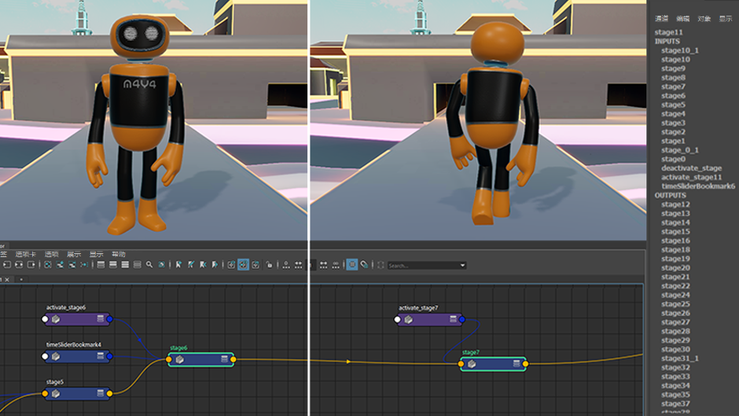
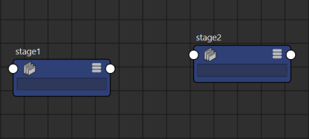
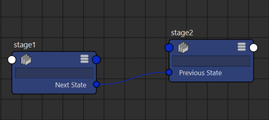
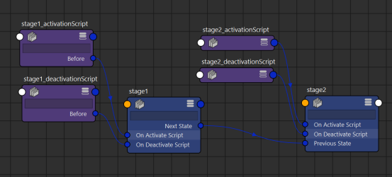
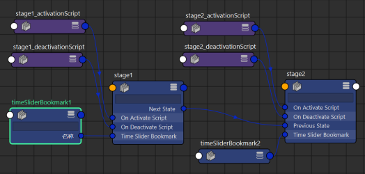

您可以使用状态机按顺序执行 Python 脚本节点，其中包含多个阶段节点并呈菊花链状连接在一起。这对于直接在应用程序中构建交互式体验（如教程、演示和演练）非常方便。这些节点允许您通过节点编辑器轻松地插入和移除所涉及的脚本或重新排列这些脚本的执行顺序。
注： 为了使用阶段节点，必须先通过
插件管理器加载 stage.py 插件。
构建和运行状态机
- 确保在中加载了 stage.py。
- 打开节点编辑器。
- 创建两个阶段节点。

- 将 stage1 的“下一状态”(Next State)属性连接到 stage2 的“前一状态”(Previous State)属性。

- 在每个阶段的“激活脚本时”(On Activate Script)和“取消激活脚本时”(On Deactivate Script)属性中，输入想要在阶段开始和结束时执行的 Python 代码（直接在字段中，或通过连接设置为“Python”模式的脚本节点）。

- （可选）将“时间滑块书签”(Time Slider Bookmark)节点连接到阶段节点，以在阶段激活时自动框显这些书签。

- （可选）按照相同模式在 stage2 后面添加其他阶段节点。
- 链完成后，可以使用 MEL 命令从头开始执行：
stage -e -a "stage1"
从当前阶段前进到下一阶段
- 执行下列操作之一：